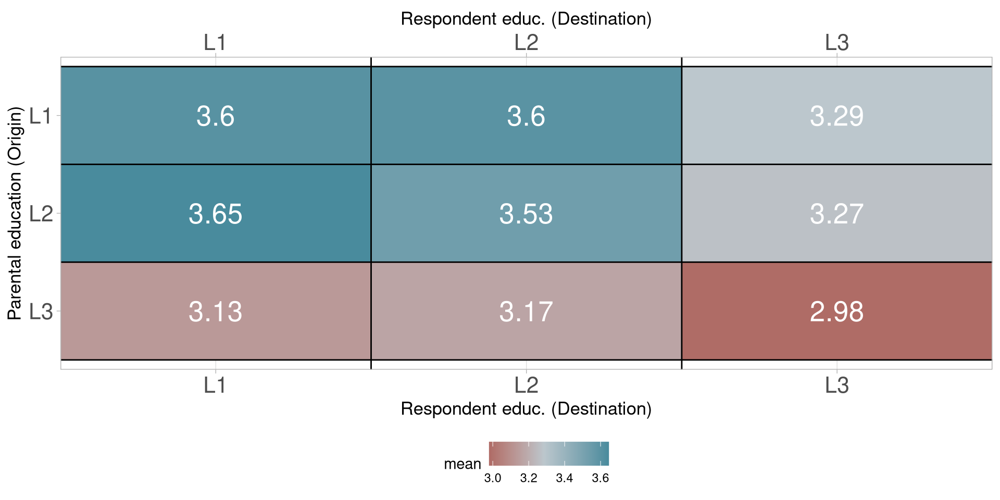
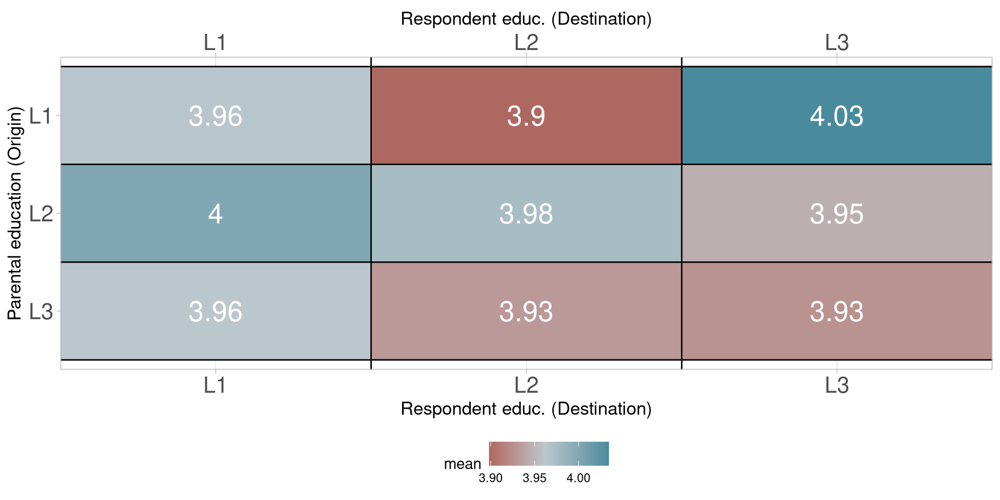
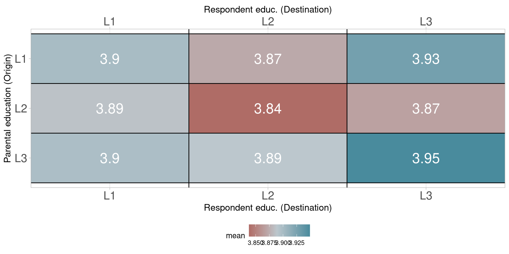
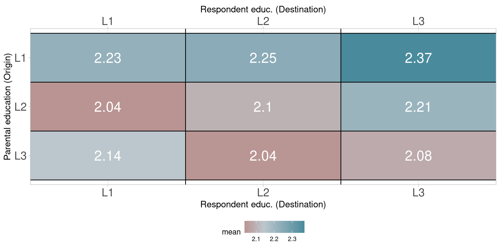
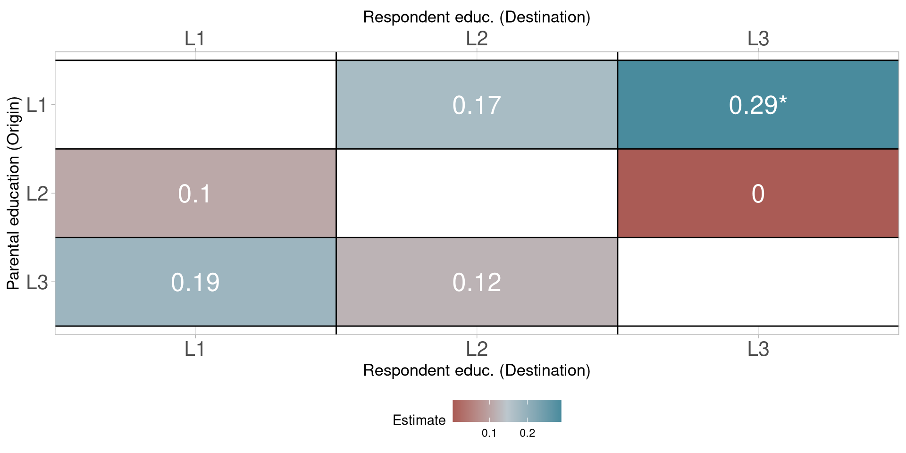
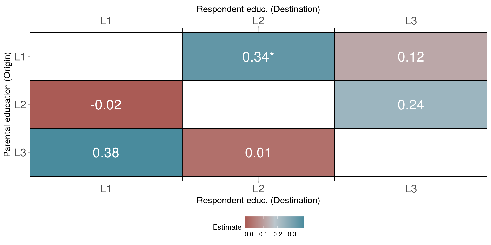
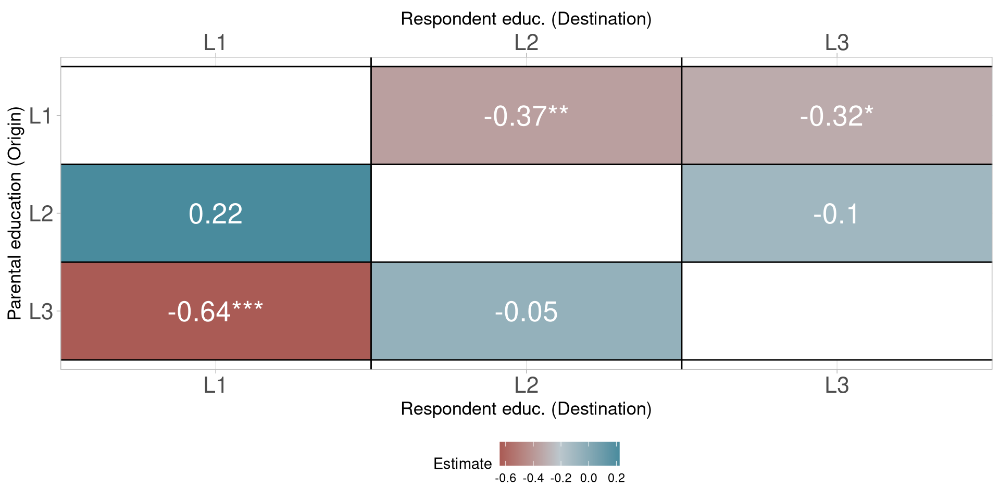
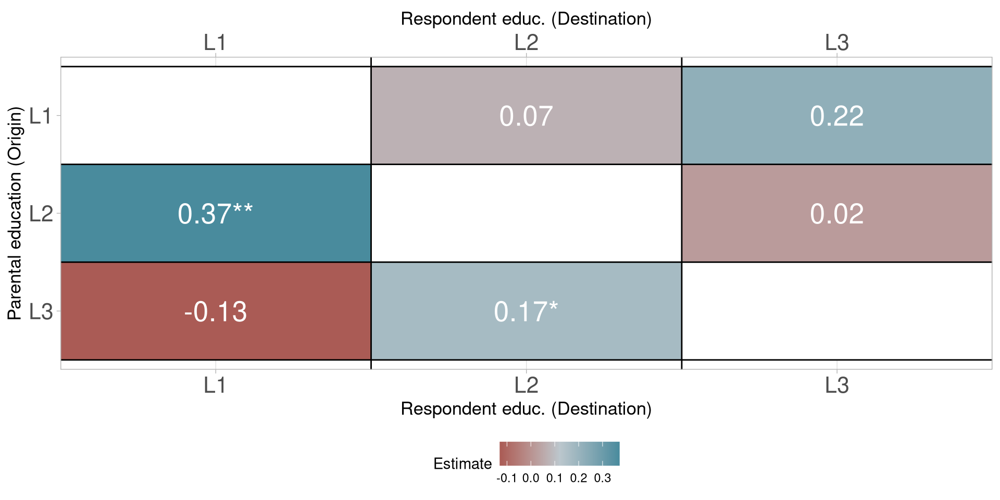
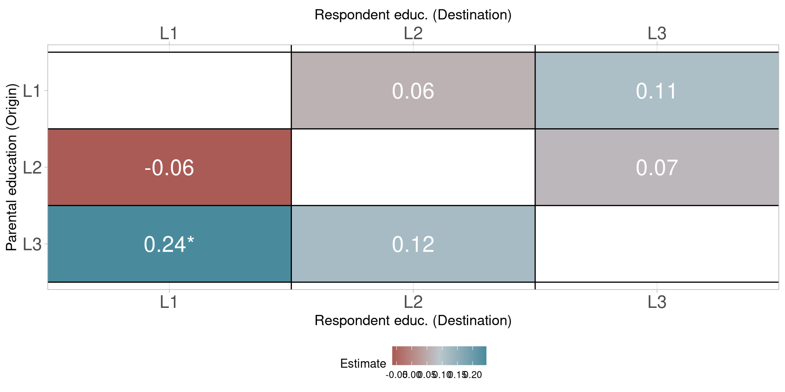
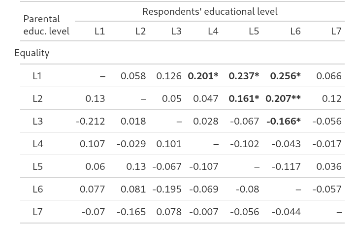

Educational Mobility and Attitudes Towards Social Justice in Europe
June 2023
Marianne said she was worried about Peggy, who was the only one of the three of them not to get the scholarship. She said it would be hard on her. Connell inhaled and said nothing. Peggy didn’t need subsidised tuition or free on-campus accommodation, because she lived at home in Blackrock and her parents were both doctors, but Marianne was intent on seeing the scholarships as a matter of personal feeling rather than economic fact.
[…]
Though in terms of financial circumstances too, obviously, she said. I mean, it’s kind of ridiculous they don’t means-test these things.
I guess we’re from very different backgrounds, class-wise.
Is the experience of educational mobility associated with attitudes towards social justice?
Education: Social class and education attainment as associated factors for welfare attitudes and views on inequality (Steele and Breznau 2019; Reyes and Gasparini 2022; Adriaans and Fourré 2022; Oorschot et al. 2022)
Mobility: Integenerational educational mobility related with attitudes to immigration (Creighton, Capistrano, and Da Silva Pedroso 2022) and openness to globalisation (Kunst, Kuhn, and Werfhorst 2023)
European Social Survey
Irish Research Council
Special module on Fairness and Justice (2018)
29 European countries
44,584 observations
Outcome: Equality, Equity, Need, Justice
Explanatory: Mobility between Parental Education (Origin) and Respondent’s Education (Destination)
Covariates: Age, Gender, Feeling about household income, Parental educational attainment, Respondent’s educational attainment
Mobility Contrast Model (Luo 2022)
| Parental educ. level |
Respondents' educational level | ||
|---|---|---|---|
| L1 | L2 | L3 | |
| L1 | 25.2 | 17.7 | 11.8 |
| L2 | 2.8 | 12.4 | 8.7 |
| L3 | 3.0 | 4.1 | 14.3 |










Are there any country-level characteristics that could explain the differences found in mobility effects?
Theoretical or methodological explanations for differences across principles? (clear for equality but no observed differences for the other three)
Social justice principles
Scales created by Hülle et al. (2018) to assess the following principles:
Equality: Everyone should receive the same in a society
Equity: Benefits and burdens should be distributed according to individual investments
Need: Everyone should receive enough to cover basic needs
Entitlement: Benefits or burdens should be allocated according to achieved status such as gender, education, occupation, or origin